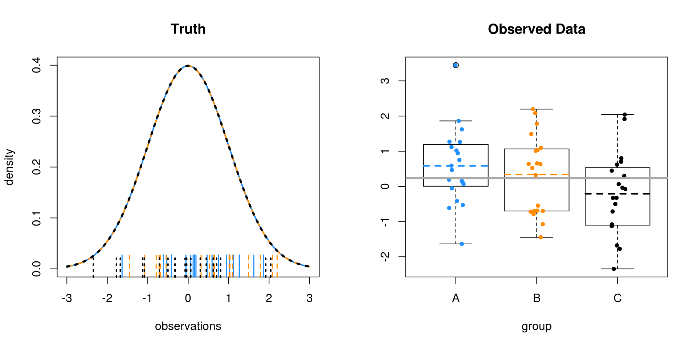
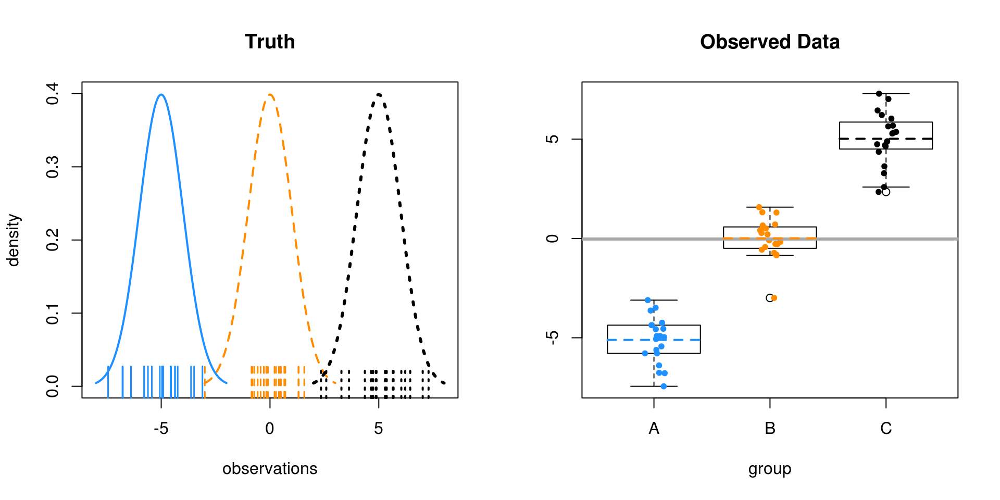
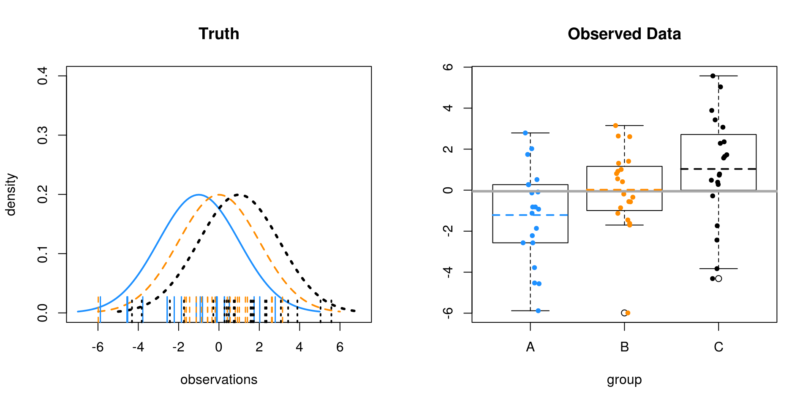
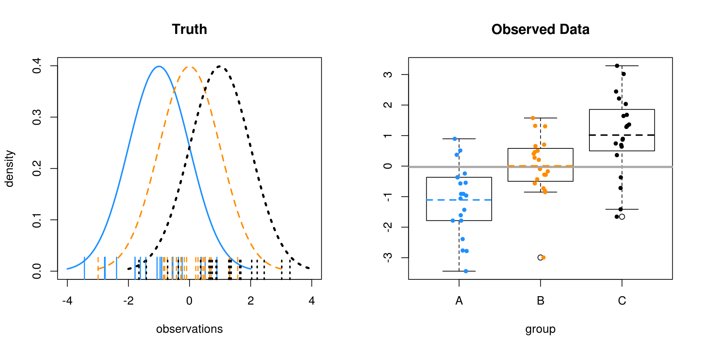
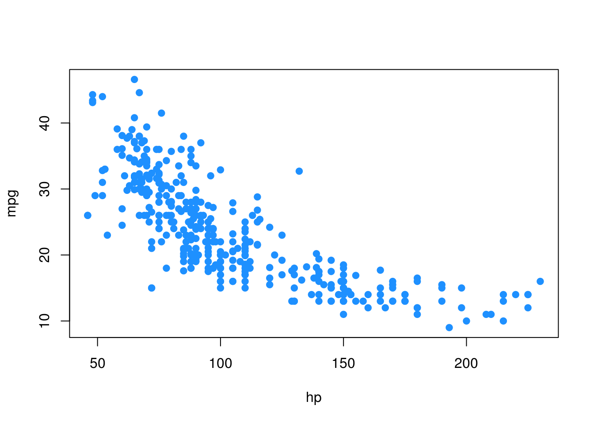
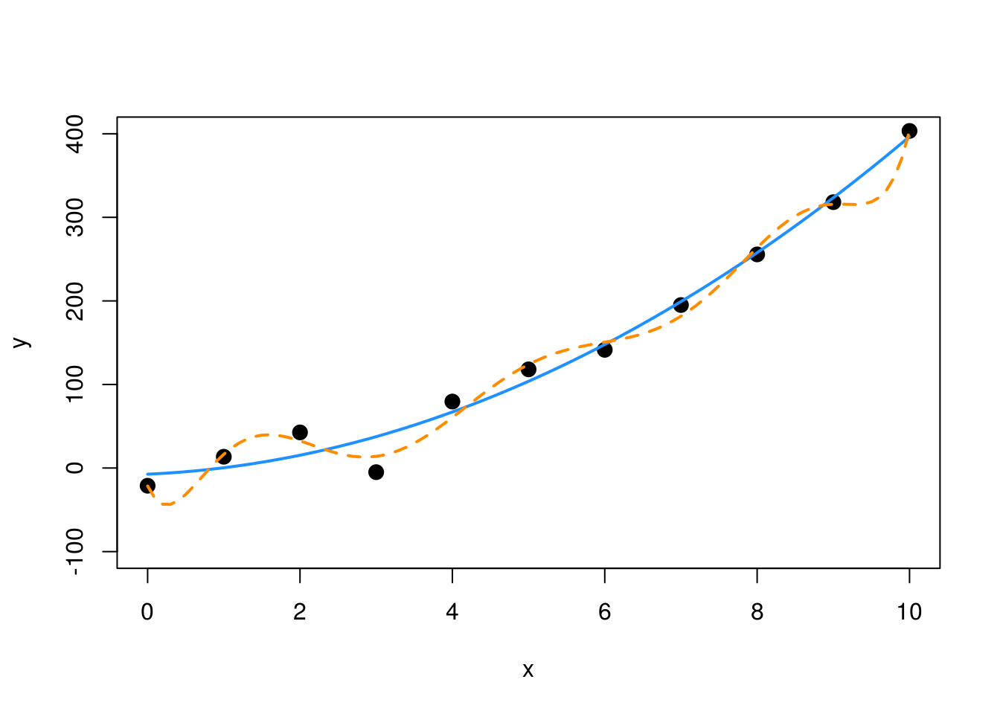
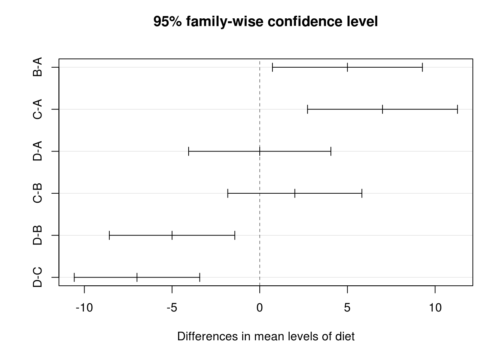
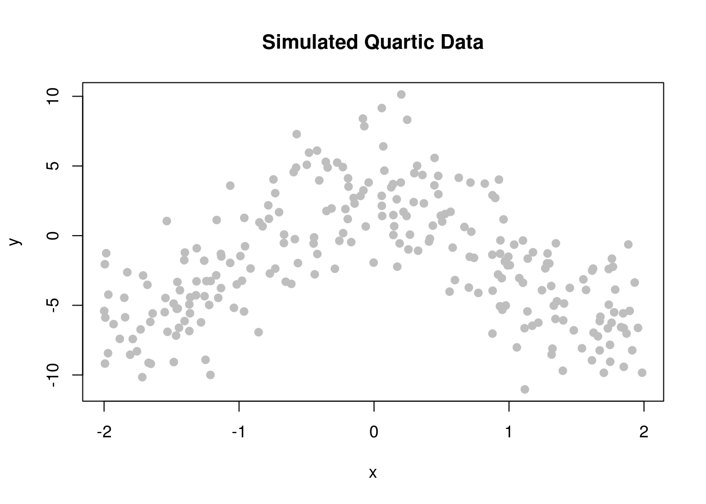

Chapter 13 Analysis of Variance
This chapter, which currently lives at the end of the text, are notes specific to the Fall 2016 run of STAT 420 for the MCS-DS program.
“To find out what happens when you change something, it is necessary to change it.”
— Box, Hunter, and Hunter, Statistics for Experimenters (1978)
Thus far, we have built models for numeric responses, when the predictors are all numeric. We’ll take a minor detour to go back and consider models which only have categorical predictors. A categorical predictor is a variable which takes only a finite number of values, which are not ordered. For example a variable which takes possible values red, blue, green is categorical. In the context of using a categorical variable as a predictor, it would place observations into different groups (categories).
We’ve also mostly been dealing with observational data. The methods in this section are most useful in experimental settings, but still work with observational data. (However, for determining causation, we require experiments.)
13.1 Experiments
The biggest difference between an observational study and an experiment is how the predictor data is obtained. Is the experimenter in control?
- In an observational study, both response and predictor data are obtained via observation.
- In an experiment, the predictor data are values determined by the experimenter. The experiment is run and the response is observed.
In an experiment, the predictors, which are controlled by the experimenter, are called factors. The possible values of these factors are called levels. Subjects are randomly assigned to a level of each of the factors.
The design of experiments could be a course by itself. The Wikipedia article on design of experiments gives a good overview. Originally, most of the methodology was developed for agricultural applications by R. A. Fisher, but are still in use today, now in a wide variety of application areas. Notably, these methods have seen a resurgence as a part of “A/B Testing.”
13.2 Two-Sample t-Test
The simplest example of an experimental design is the setup for a two-sample \(t\)-test. There is a single factor variable with two levels which split the subjects into two groups. Often, one level is considered the control, while the other is the treatment. The subjects are randomly assigned to one of the two groups. After being assigned to a group, each subject has some quantity measured, which is the response variable.
Mathematically, we consider the model
\[ y_{ij} \sim N(\mu_i, \sigma^2) \]
where \(i = 1, 2\) for the two groups and \(j = 1, 2, \ldots n_i\). Here \(n_i\) is the number of subjects in group \(i\). So \(y_{13}\) would be the measurement for the third member of the first group.
So measurements of subjects in group \(1\) follow a normal distribution with mean \(\mu_1\).
\[ y_{1j} \sim N(\mu_1, \sigma^2) \]
Then measurements of subjects in group \(2\) follow a normal distribution with mean \(\mu_2\).
\[ y_{2j} \sim N(\mu_2, \sigma^2) \]
This model makes a number of assumptions. Specifically,
- The observations follow a normal distribution. The mean of each group is different.
- Equal variance for each group.
- Independence. Which is believable if groups were randomly assigned.
Later, we will investigate the normal and equal variance assumptions. For now, we will continue to assume they are reasonable.
The natural question to ask: Is there a difference between the two groups? The specific question we’ll answer: Are the means of the two groups different?
Mathematically, that is
\[ H_0: \mu_1 = \mu_2 \quad \text{vs} \quad H_1: \mu_1 \neq \mu_2 \]
For the stated model and assuming the null hypothesis is true, the \(t\) test statistic would follow a \(t\) distribution with degrees of freedom \(n_1 + n_2 - 2\).
As an example, suppose we are interested in the effect of melatotin on sleep duration. A researcher obtains a random sample of 20 adult males. Of these subjects, 10 are randomly chosen for the control group, which will receive a placebo. The remaining 10 will be given 5mg of melatonin before bed. The sleep duration in hours of each subject is then measured. The researcher chooses a significance level of \(\alpha = 0.10\). Was sleep duration affected by the melatonin?
melatonin## sleep group
## 1 8.145150 control
## 2 7.522362 treatment
## 3 6.935754 control
## 4 8.959435 treatment
## 5 6.985122 control
## 6 8.072651 treatment
## 7 8.313826 control
## 8 8.086409 treatment
## 9 8.922108 control
## 10 8.124743 treatment
## 11 8.065844 control
## 12 10.943974 treatment
## 13 4.833367 control
## 14 7.865453 treatment
## 15 6.340014 control
## 16 8.963140 treatment
## 17 6.158896 control
## 18 5.012253 treatment
## 19 3.571440 control
## 20 9.784136 treatmentHere, we would like to test,
\[ H_0: \mu_C = \mu_T \quad \text{vs} \quad H_1: \mu_C \neq \mu_T \]
To do so in R, we use the t.test() function, with the var.equal argument set to TRUE.
t.test(sleep ~ group, data = melatonin, var.equal = TRUE)##
## Two Sample t-test
##
## data: sleep by group
## t = -2.0854, df = 18, p-value = 0.05154
## alternative hypothesis: true difference in means is not equal to 0
## 95 percent confidence interval:
## -3.02378261 0.01117547
## sample estimates:
## mean in group control mean in group treatment
## 6.827152 8.333456At a significance level of \(\alpha = 0.10\), we reject the null hypothesis. It seems that the melatonin had a statistically significant effect. Be aware that statistical significance is not always the same as scientific or practical significance. To determine practical significance, we need to investigate the effect size in the context of the situation. Here the effect size is the difference of the sample means.
t.test(sleep ~ group, data = melatonin, var.equal = TRUE)$estimate## mean in group control mean in group treatment
## 6.827152 8.333456Here we see that the subjects in the melatonin group sleep an average of about 1.5 hours longer than the control group. An hour and a half of sleep is certainly important!
With a big enough sample size, we could make an effect size of say, four minutes statistically significant. Is it worth taking a pill every night to get an extra four minutes of sleep? (Probably not.)
boxplot(sleep ~ group, data = melatonin, col = 5:6)
13.3 One-Way ANOVA
What if there are more than two groups? Consider the model
\[ y_{ij} = \mu + \alpha_i + e_{ij}. \]
where
\[ \sum \alpha_i = 0 \]
and
\[ e_{ij} \sim N(0,\sigma^{2}). \]
Here,
- \(i = 1, 2, \ldots g\) where \(g\) is the number of groups.
- \(j = 1, 2, \ldots n_i\) where \(n_i\) is the number of observations in group \(i\).
Then the total sample size is
\[ N = \sum_{i = i}^{g} n_i \]
Observations from group \(i\) follow a normal distribution
\[ y_{ij} \sim N(\mu_i,\sigma^{2}) \]
where the mean of each group is given by
\[ \mu_i = \mu + \alpha_i. \]
Here \(\alpha_i\) measures the effect of group \(i\). It is the difference between the overall mean and the mean of group \(i\).
Essentially, the assumptions here are the same as the two sample case, however now, we simply have more groups.
Much like the two-sample case, we would again like to test if the means of the groups are equal.
\[ H_0: \mu_1 = \mu_2 = \ldots \mu_g \quad \text{vs} \quad H_1: \text{ Not all } \mu_i \text{ are equal.} \]
Notice that the alternative simply indicates the some of the means are not equal, not specifically which are not equal. More on that later.
Alternatively, we could write
\[ H_0: \alpha_1 = \alpha_2 = \ldots = \alpha_g = 0 \quad \text{vs} \quad H_1: \text{ Not all } \alpha_i \text{ are } 0. \]
This test is called Analysis of Variance. Analysis of Variance (ANOVA) compares the variation due to specific sources (between groups) with the variation among individuals who should be similar (within groups). In particular, ANOVA tests whether several populations have the same mean by comparing how far apart the sample means are with how much variation there is within the samples. We use variability of means to test for equality of means, thus the use of variance in the name for a test about means.
We’ll leave out most of the details about how the estimation is done, but we’ll see later, that it is done via least squares. We’ll use R to obtain these estimates, but they are actually rather simple. We only need to think about the sample means of the groups.
- \(\bar{y}_i\) is the sample mean of group \(i\).
- \(\bar{y}\) is the overall sample mean.
- \(s_{i}^{2}\) is the sample variance of group \(i\).
We’ll then decompose the variance, as we’ve seen before in regression. The total variation measures how much the observations vary about the overall sample mean, ignoring the groups.
\[ SST = \sum_{i = i}^{g} \sum_{j = 1}^{n_i} (y_{ij} - \bar{y})^2 \]
The variation between groups looks at how far the individual sample means are from the overall sample mean.
\[ SSB = \sum_{i = i}^{g} \sum_{j = 1}^{n_i} (\bar{y}_i - \bar{y})^2 = \sum_{i = i}^{g} n_i (\bar{y}_i - \bar{y})^2 \]
Lastly, the within group variation measures how far observations are from the sample mean of its group.
\[ SSW = \sum_{i = i}^{g} \sum_{j = 1}^{n_i} (y_{ij} - \bar{y}_i)^2 = \sum_{i = i}^{g} (n_i - 1) s_{i}^{2} \]
This could also be thought of as the error sum of squares, where \(y_{ij}\) is an observation and \(\bar{y}_i\) is its fitted (predicted) value from the model.
To develop the test statistic for ANOVA, we place this information into an ANVOA table.
| Source | Sum of Squares | Degrees of Freedom | Mean Square | \(F\) |
|---|---|---|---|---|
| Between | SSB | \(g - 1\) | SSB / DFB | MSB / MSW |
| Within | SSW | \(N - g\) | SSW / DFW | |
| Total | SST | \(N - 1\) |
We reject the null (equal means) when the \(F\) statistic is large. This occurs when the variation between groups is large compared to the variation within groups. Under the null hypothesis, the distribution of the test statistic is \(F\) with degrees of freedom \(g - 1\) and \(N - g\).
Let’s see what this looks like in a few situations. In each of the following examples, we’ll consider sampling 20 observations (\(n_i = 20\)) from three populations (groups).
First, consider \(\mu_A = -5, \mu_B = 0, \mu_C = 5\) with \(\sigma = 1\).

The left panel shows the three normal distributions we are sampling from. The ticks along the \(x\)-axis show the randomly sampled observations. The right panel, re-displays only the sampled values in a boxplot. Note that the mid-line of the boxes is usually the sample median. These boxplots have been modified to use the sample mean.
Here the sample means vary a lot around the overall sample mean, which is the solid grey line on the right panel. Within the groups there is variability, but it is still obvious that the sample means are very different.
As a result, we we obtain a large test statistic, thus small p-value.
- \(F = 374.4469511\)
- \(\text{p-value} = 1.6349862\times 10^{-33}\)
Now consider \(\mu_A = 0, \mu_B = 0, \mu_C = 0\) with \(\sigma = 1\). That is, equal means for the groups.

Here the sample means vary only a tiny bit around the overall sample mean. Within the groups there is variability, this time much larger than the variability of the sample means.
As a result, we we obtain a small test statistic, thus large p-value.
- \(F = 2.667892\)
- \(\text{p-value} = 0.0780579\)
The next two examples show different means, with different levels of noise. Notice how these affect the test statistic and p-value.
- \(\mu_A = -1, \mu_B = 0, \mu_C = 1, \sigma = 1\)

- \(F = 16.4879492\)
- \(\text{p-value} = 0.0000022\)
Above, there isn’t obvious separation between the groups like the first example, but it is still obvious the means are different. Below, there is more noise. Visually it is somewhat hard to tell, but the test still suggests a difference of means. (At an \(\alpha\) of 0.05.)
- \(\mu_A = -1, \mu_B = 0, \mu_C = 1, \sigma = 2\)
- \(n_i = 20\) for each group.

- \(F = 4.6256472\)
- \(\text{p-value} = 0.0137529\)
Let’s consider an example with real data. We’ll use the coagulation dataset from the faraway package. Here four different diets (A, B, C, D) were administered to a random sample of 24 animals. The subjects were randomly assigned to one of the four diets. For each, their blood coagulation time was measured in seconds.
Here we would like to test
\[ H_0: \mu_A = \mu_B = \mu_C = \mu_D \]
where, for example, \(\mu_A\) is the mean blood coagulation time for an animal that ate diet A.
library(faraway)
names(coagulation)## [1] "coag" "diet"plot(coag ~ diet, data = coagulation, col = 2:5)
We first load the data and create the relevant boxplot. The plot alone suggests a difference of means. The aov() function is used to obtain the relevant sums of squares. Using the summary() function on the output from aov() creates the desired ANOVA table. (Without the unneeded row for total.)
coag_aov = aov(coag ~ diet, data = coagulation)
coag_aov## Call:
## aov(formula = coag ~ diet, data = coagulation)
##
## Terms:
## diet Residuals
## Sum of Squares 228 112
## Deg. of Freedom 3 20
##
## Residual standard error: 2.366432
## Estimated effects may be unbalancedsummary(coag_aov)## Df Sum Sq Mean Sq F value Pr(>F)
## diet 3 228 76.0 13.57 0.0000466 ***
## Residuals 20 112 5.6
## ---
## Signif. codes: 0 '***' 0.001 '**' 0.01 '*' 0.05 '.' 0.1 ' ' 1Were we to run this experiment, we would have pre-specified a significance level. However, notice that the p-value of this test is incredibly low, so using any reasonable significance level we would reject the null hypothesis. Thus we believe the diets had an effect on blood coagulation time.
diets = data.frame(diet = unique(coagulation$diet))
data.frame(diets, coag = predict(coag_aov, diets))## diet coag
## 1 A 61
## 2 B 66
## 3 C 68
## 4 D 61Here, we’ve created a dataframe with a row for each diet. By predicting on this dataframe, we obtain the sample means of each diet (group).
13.3.1 Factor Variables
When performing ANOVA in R, be sure the grouping variable is a factor variable. If it is not, your result might not be ANOVA, but instead a linear regression with the predictor variable considered numeric.
set.seed(42)
response = rnorm(15)
group = c(rep(1, 5), rep(2, 5), rep(3, 5))
bad = data.frame(response, group)
summary(aov(response ~ group, data = bad)) # wrong DF!## Df Sum Sq Mean Sq F value Pr(>F)
## group 1 0.017 0.0173 0.015 0.903
## Residuals 13 14.698 1.1306good = data.frame(response, group = as.factor(group))
summary(aov(response ~ group, data = good))## Df Sum Sq Mean Sq F value Pr(>F)
## group 2 0.232 0.1158 0.096 0.909
## Residuals 12 14.484 1.2070is.factor(bad$group) # 1, 2, and 3 are numbers.## [1] FALSEis.factor(good$group) # 1, 2, and 3 are labels.## [1] TRUE13.3.2 Some Simulation
Here we verify the distribution of the test statistic under the null hypothesis. We simulate from a null model (equal variance) to obtain an empirical distribution of the \(F\) statistic. We add the curve for the expected distribution.
library(broom)
sim_anova = function(n = 10, mu_a = 0, mu_b = 0, mu_c = 0, mu_d = 0, sigma = 1, stat = TRUE) {
# create data from one-way ANOVA model with four groups of equal size
# response simulated from normal with group mean, shared variance
# group variable indicates group A, B, C or D
sim_data = data.frame(
response = c(rnorm(n = n, mean = mu_a, sd = sigma),
rnorm(n = n, mean = mu_b, sd = sigma),
rnorm(n = n, mean = mu_c, sd = sigma),
rnorm(n = n, mean = mu_d, sd = sigma)),
group = c(rep("A", times = n), rep("B", times = n),
rep("C", times = n), rep("D", times = n))
)
# obtain F-statistic and p-value for testing difference of means
aov_results = aov(response ~ group, data = sim_data)
f_stat = glance(aov_results)$stat
p_val = glance(aov_results)$p.val
# return f_stat if stat = TRUE, otheriwse, p-value
ifelse(stat, f_stat, p_val)
}
f_stats = replicate(n = 5000, sim_anova(stat = TRUE))
hist(f_stats, breaks = 100, prob = TRUE, border = "dodgerblue", main = "Empirical Distribution of F")
curve(df(x, df1 = 4 - 1, df2 = 40 - 4), col = "darkorange", add = TRUE, lwd = 2)
13.3.3 Power
Now that we’re performing experiments, getting more data means finding more test subjects, running more lab tests, etc. In other words, it will cost more time and money.
We’d like to design our experiment so that we have a good chance of detecting an interesting effect size, without spending too much money. There’s no point in running an experiment if there’s only a very low chance that it has a significant result that you care about. (Remember, not all statistically significant results have practical value.)
We’d like the ANOVA test to have high power for an alternative hypothesis with a minimum desired effect size.
\[ \text{Power } = P(\text{Rejct } H_0 \mid H_0 \text{ False}) \]
That is, for a true difference of means that we deem interesting, we want the test to reject with high probability.
A number of things can affect the power of a test:
- Effect size. It is easier to detect larger effects.
- Noise level \(\sigma\). The less noise, the easier it is to detect signal (effect). We don’t have much ability to control this, except maybe to measure more accurately.
- Significance level \(\alpha\). Lower significance level makes rejecting more difficult. (But also allows for less false positives.)
- Sample size. Large samples means easier to detect effects.
- Balanced design. An equal number of observations per group leads to higher power.
The following simulations look at the effect of significance level, effect size, and noise level on the power of an ANOVA \(F\)-test. Homework will look into sample size and balance.
p_vals = replicate(n = 1000, sim_anova(mu_a = -1, mu_b = 0, mu_c = 0, mu_d = 1,
sigma = 1.5, stat = FALSE))
mean(p_vals < 0.05)## [1] 0.663mean(p_vals < 0.01)## [1] 0.39p_vals = replicate(n = 1000, sim_anova(mu_a = -1, mu_b = 0, mu_c = 0, mu_d = 1,
sigma = 2.0, stat = FALSE))
mean(p_vals < 0.05)## [1] 0.408mean(p_vals < 0.01)## [1] 0.179p_vals = replicate(n = 1000, sim_anova(mu_a = -2, mu_b = 0, mu_c = 0, mu_d = 2,
sigma = 2.0, stat = FALSE))
mean(p_vals < 0.05)## [1] 0.964mean(p_vals < 0.01)## [1] 0.85513.4 Post Hoc Testing
Suppose we reject the null hypothesis from the ANOVA test for equal means. That tells us that the means are different. But which means? All of them? Some of them? The obvious strategy is to test all possible comparisons of two means. We can do this easily in R.
with(coagulation, pairwise.t.test(coag, diet, p.adj = "none"))##
## Pairwise comparisons using t tests with pooled SD
##
## data: coag and diet
##
## A B C
## B 0.00380 - -
## C 0.00018 0.15878 -
## D 1.00000 0.00086 0.000023
##
## P value adjustment method: none# pairwise.t.test(coagulation$coag, coagulation$diet, p.adj = "none")Notice the pairwise.t.test() function does not have a data argument. To avoid using attach() or the $ operator, we introduce the with() function. The commented line would perform the same operation.
Also note that we are using the argument p.adj = "none". What is this? An adjustment (in this case not an adjustment) to the p-value of each test. Why would we need to do this?
The adjustment is an attempt to correct for the multiple testing problem. (See also: Relevant XKCD. ) Imagine that you knew ahead of time that you were going to perform 100 \(t\)-tests. Suppose you wish to do this with a false positive rate of \(\alpha = 0.05\). If we use this significance level for each test, for 100 tests, we then expect 5 false positives. That means, with 100 tests, we’re almost guaranteed to have at least one error.
What we’d really like, is for the family-wise error rate to be 0.05. If we consider the 100 tests to be a single “experiment” the FWER is the rate of one or more false positives for in the full experiment (100 tests). Consider it an error rate for an entire procedure, instead of a single test.
With this in mind, one of the simplest adjustments we can make, is to increase the p-values for each test, depending on the number of tests. In particular the Bonferroni correction simply multiplies by the number of tests.
\[ \text{p-value-bonf} = \min(1, n_{tests} \cdot \text{p-value}) \]
with(coagulation, pairwise.t.test(coag, diet, p.adj = "bonferroni"))##
## Pairwise comparisons using t tests with pooled SD
##
## data: coag and diet
##
## A B C
## B 0.02282 - -
## C 0.00108 0.95266 -
## D 1.00000 0.00518 0.00014
##
## P value adjustment method: bonferroniWe see that these p-values are much higher than the unadjusted p-values, thus, we are less likely to reject each tests. As a result, the FWER is 0.05, instead of an error rate of 0.05 for each test.
We can simulate the 100 test scenario to illustrate this point.
get_p_val = function() {
# create data for two groups, equal mean
y = rnorm(20, mean = 0, sd = 1)
g = c(rep("A", 10), rep("B", 10))
# p-value of t-test when null is true
glance(t.test(y ~ g, var.equal = TRUE))$p.value
}
set.seed(1337)
# FWER with 100 tests
# desired rate = 0.05
# no adjustment
mean(replicate(1000, any(replicate(100, get_p_val()) < 0.05)))## [1] 0.994# FWER with 100 tests
# desired rate = 0.05
# bonferroni adjustment
mean(replicate(1000, any(p.adjust(replicate(100, get_p_val()), "bonferroni") < 0.05)))## [1] 0.058For the specific case of testing all two-way mean differences after an ANOVA test, there are a number of potential methods for making an adjustment of this type. The pros and cons of the potential methods are beyond the scope of this course. We choose a method for its ease of use, and to a lesser extent, its developer.
Tukey’s Honest Significance difference can be applied directly to an object which was created using aov(). It will adjust the p-values of the pairwise comparisons of the means to control the FWER, in this case, for 0.05. Notice it also gives confidence intervals for the difference of the means.
TukeyHSD(coag_aov, conf.level = 0.95)## Tukey multiple comparisons of means
## 95% family-wise confidence level
##
## Fit: aov(formula = coag ~ diet, data = coagulation)
##
## $diet
## diff lwr upr p adj
## B-A 5 0.7245544 9.275446 0.0183283
## C-A 7 2.7245544 11.275446 0.0009577
## D-A 0 -4.0560438 4.056044 1.0000000
## C-B 2 -1.8240748 5.824075 0.4766005
## D-B -5 -8.5770944 -1.422906 0.0044114
## D-C -7 -10.5770944 -3.422906 0.0001268Based on these results, we see no difference between A and D as well as B and C. All other pairwise comparisons are significant. If you return to the original boxplot, these results should not be surprising.
Also, nicely, we can easily produce a plot of these confidence intervals.
plot(TukeyHSD(coag_aov, conf.level = 0.95))
The creator of this method, John Tukey, is an important figure in the history of data science. He essentially predicted the rise of data science over 50 years ago. For some retrospective thoughts on those 50 years, see this paper from David Donoho.
13.5 Two-Way ANOVA
What if there is more than one factor variable? Why do we need to limit ourselves to experiments with only one factor? We don’t! Consider the model
\[ y_{ijk} = \mu + \alpha_i + \beta_j + (\alpha \beta)_{ij} + \epsilon_{ijk}. \]
where \(\epsilon_{ijk}\) are \(N(0, \sigma^2)\) random variables.
We add constraints
\[ \sum \alpha_i = 0 \quad \quad \sum \beta_j = 0. \]
and
\[ (\alpha \beta)_{1j} + (\alpha \beta)_{2j} + (\alpha \beta)_{3j} = 0 \\ (\alpha \beta)_{i1} + (\alpha \beta)_{i2} + (\alpha \beta)_{i3} + (\alpha \beta)_{i4} = 0 \]
for any \(i\) or \(j\).
Here,
- \(i = 1, 2, \ldots I\) where \(I\) is the number of levels of factor \(A\).
- \(j = 1, 2, \ldots J\) where \(J\) is the number of levels of factor \(B\).
- \(k = 1, 2, \ldots K\) where \(K\) is the number of replicates per group.
Here, we can think of a group as a combination of a level from each of the factors. So for example, one group will receive level \(2\) of factor \(A\) and level \(3\) of factor \(B\). The number of replicates is the number of subjects in each group. Here \(y_{135}\) would be the measurement for the fifth member (replicate) of the group for level \(1\) of factor \(A\) and level \(3\) of factor \(B\).
We call this setup an \(I \times J\) factorial design with \(K\) replicates. (Our current notation only allows for equal replicates in each group. It isn’t difficult to allow for different replicates for different groups, but we’ll proceed using equal replicates per group, which if possible, is desirable.)
- \(\alpha_i\) measures the effect of level \(i\) of factor \(A\). We call these the main effects of factor \(A\).
- \(\beta_j\) measures the effect of level \(j\) of factor \(B\). We call these the main effects of factor \(B\).
- \((\alpha \beta)_{ij}\) is a single parameter. We use \(\alpha \beta\) to note that this parameter measures the interaction between the two main effects.
Under this setup, there are a number of models that we can compare. Consider a \(2 \times 2\) factorial design. The following tables show the means for each of the possible groups under each model.
Interaction Model: \(y_{ijk} = \mu + \alpha_i + \beta_j + (\alpha \beta)_{ij} + \epsilon_{ijk}\)
| Factor B, Level 1 | Factor B, Level 2 | |
|---|---|---|
| Factor A, Level 1 | \(\mu + \alpha_1 + \beta_1 + (\alpha\beta)_{11}\) | \(\mu + \alpha_1 + \beta_2 + (\alpha\beta)_{12}\) |
| Factor A, Level 2 | \(\mu + \alpha_2 + \beta_1 + (\alpha\beta)_{21}\) | \(\mu + \alpha_2 + \beta_2 + (\alpha\beta)_{22}\) |
Additive Model: \(y_{ijk} = \mu + \alpha_i + \beta_j + \epsilon_{ijk}\)
| Factor B, Level 1 | Factor B, Level 2 | |
|---|---|---|
| Factor A, Level 1 | \(\mu + \alpha_1 + \beta_1\) | \(\mu + \alpha_1 + \beta_2\) |
| Factor A, Level 2 | \(\mu + \alpha_2 + \beta_1\) | \(\mu + \alpha_2 + \beta_2\) |
Factor B Only Model (One-Way): \(y_{ijk} = \mu + \beta_j + \epsilon_{ijk}\)
| Factor B, Level 1 | Factor B, Level 2 | |
|---|---|---|
| Factor A, Level 1 | \(\mu + \beta_1\) | \(\mu + \beta_2\) |
| Factor A, Level 2 | \(\mu + \beta_1\) | \(\mu + \beta_2\) |
Factor A Only Model (One-Way): \(y_{ijk} = \mu + \alpha_i + \epsilon_{ijk}\)
| Factor B, Level 1 | Factor B, Level 2 | |
|---|---|---|
| Factor A, Level 1 | \(\mu + \alpha_1\) | \(\mu + \alpha_1\) |
| Factor A, Level 2 | \(\mu + \alpha_2\) | \(\mu + \alpha_2\) |
Null Model: \(y_{ijk} = \mu + \epsilon_{ijk}\)
| Factor B, Level 1 | Factor B, Level 2 | |
|---|---|---|
| Factor A, Level 1 | \(\mu\) | \(\mu\) |
| Factor A, Level 2 | \(\mu\) | \(\mu\) |
The question then, is which of these models should we use if we have two factors? The most important question to consider is whether or not we should model the interaction. Is the effect of Factor A the same for all levels of Factor B? In the additive model, yes. In the interaction model, no. Both models would use a different mean for each group, but in a very specific way in both cases.
Let’s discuss these comparisons by looking at some examples. We’ll first look at the rats data from the faraway package. There are two factors here: poison and treat. We use the levels() function to extract the levels of a factor variable.
levels(rats$poison)## [1] "I" "II" "III"levels(rats$treat)## [1] "A" "B" "C" "D"Here, 48 rats were randomly assigned both one of three poisons and one of four possible treatments. The experimenters then measures their survival time in tens of hours. A total of 12 groups, each with 4 replicates.
Before running any tests, we should first look at the data. We will create interaction plots, which will help us visualize the effect of one factor, as we move through the levels of another factor.
par(mfrow = c(1, 2))
with(rats, interaction.plot(poison, treat, time, lwd = 2, col = 1:4))
with(rats, interaction.plot(treat, poison, time, lwd = 2, col = 1:3))
If there is not interaction, thus an additive model, we would expect to see parallel lines. That would mean, when we change the level of one factor, there can be an effect on the response. However, the difference between the levels of the other factor should still be the same.
The obvious indication of interaction would be lines that cross while heading in different directions. Here we don’t see that, but the lines aren’t strictly parallel, and there is some overlap on the right panel. However, is this interaction effect significant?
Let’s fit each of the possible models, then investigate their estimates for each of the group means.
rats_int = aov(time ~ poison * treat, data = rats) # interaction model
rats_add = aov(time ~ poison + treat, data = rats) # additive model
rats_pois = aov(time ~ poison , data = rats) # single factor model
rats_treat = aov(time ~ treat, data = rats) # single factor model
rats_null = aov(time ~ 1, data = rats) # null modelTo get the estimates, we’ll create a table which we will predict on.
rats_table = expand.grid(poison = unique(rats$poison), treat = unique(rats$treat))
rats_table## poison treat
## 1 I A
## 2 II A
## 3 III A
## 4 I B
## 5 II B
## 6 III B
## 7 I C
## 8 II C
## 9 III C
## 10 I D
## 11 II D
## 12 III Dmatrix(paste0(rats_table$poison, "-", rats_table$treat) , 4, 3, byrow = TRUE)## [,1] [,2] [,3]
## [1,] "I-A" "II-A" "III-A"
## [2,] "I-B" "II-B" "III-B"
## [3,] "I-C" "II-C" "III-C"
## [4,] "I-D" "II-D" "III-D"Since we’ll be repeating ourselves a number of times, we write a function to perform the prediction. Some housekeeping is done to keep the estimates in order, and provide row and column names. Above, we’ve shown where each of the estimates will be placed in the resulting matrix.
get_est_means = function(model, table) {
mat = matrix(predict(model, table), nrow = 4, ncol = 3, byrow = TRUE)
colnames(mat) = c("I", "II", "III")
rownames(mat) = c("A", "B", "C", "D")
mat
}First, we obtain the estimates from the interaction model. Note that each cell has a different value.
knitr::kable(get_est_means(model = rats_int, table = rats_table))| I | II | III | |
|---|---|---|---|
| A | 0.4125 | 0.3200 | 0.210 |
| B | 0.8800 | 0.8150 | 0.335 |
| C | 0.5675 | 0.3750 | 0.235 |
| D | 0.6100 | 0.6675 | 0.325 |
Next, we obtain the estimates from the additive model. Again, each cell has a different value. We also see that these estimates are somewhat close to those from the interaction model.
knitr::kable(get_est_means(model = rats_add, table = rats_table))| I | II | III | |
|---|---|---|---|
| A | 0.4522917 | 0.3791667 | 0.1110417 |
| B | 0.8147917 | 0.7416667 | 0.4735417 |
| C | 0.5306250 | 0.4575000 | 0.1893750 |
| D | 0.6722917 | 0.5991667 | 0.3310417 |
To understand the difference, let’s consider the effect of the treatments.
additive_means = get_est_means(model = rats_add, table = rats_table)
additive_means["A",] - additive_means["B",]## I II III
## -0.3625 -0.3625 -0.3625interaction_means = get_est_means(model = rats_int, table = rats_table)
interaction_means["A",] - interaction_means["B",]## I II III
## -0.4675 -0.4950 -0.1250This is the key difference between the interaction and additive models. The difference between the effect of treatments A and B is the same for each poison in the additive model. They are different in the interaction model.
The remaining three models are much simpler, having either only row or only column effects. Or no effects in the case of the null model.
knitr::kable(get_est_means(model = rats_pois, table = rats_table))| I | II | III | |
|---|---|---|---|
| A | 0.6175 | 0.544375 | 0.27625 |
| B | 0.6175 | 0.544375 | 0.27625 |
| C | 0.6175 | 0.544375 | 0.27625 |
| D | 0.6175 | 0.544375 | 0.27625 |
knitr::kable(get_est_means(model = rats_treat, table = rats_table))| I | II | III | |
|---|---|---|---|
| A | 0.3141667 | 0.3141667 | 0.3141667 |
| B | 0.6766667 | 0.6766667 | 0.6766667 |
| C | 0.3925000 | 0.3925000 | 0.3925000 |
| D | 0.5341667 | 0.5341667 | 0.5341667 |
knitr::kable(get_est_means(model = rats_null, table = rats_table))| I | II | III | |
|---|---|---|---|
| A | 0.479375 | 0.479375 | 0.479375 |
| B | 0.479375 | 0.479375 | 0.479375 |
| C | 0.479375 | 0.479375 | 0.479375 |
| D | 0.479375 | 0.479375 | 0.479375 |
To perform the needed tests, we will need to create another ANOVA table. (We’ll skip the details of the sums of squares calculations and simply let R take care of them.)
| Source | Sum of Squares | Degrees of Freedom | Mean Square | \(F\) |
|---|---|---|---|---|
| Factor A | SSA | \(I -1\) | SSA / DFA | MSA / MSE |
| Factor B | SSB | \(J -1\) | SSB / DFB | MSB / MSE |
| AB Interaction | SSAB | \((I -1)(J -1)\) | SSAB / DFAB | MSAB / MSE |
| Error | SSE | \(IJ(K - 1)\) | SSE / DFE | |
| Total | SST | \(IJK - 1\) |
The row for AB Interaction tests:
\[ H_0: \text{ All }(\alpha\beta)_{ij} = 0. \quad \text{vs} \quad H_1: \text{ Not all } (\alpha\beta)_{ij} \text{ are } 0. \]
- Null Model: \(y_{ijk} = \mu + \alpha_i + \beta_j + \epsilon_{ijk}.\) (Additive Model.)
- Alternative Model: \(y_{ijk} = \mu + \alpha_i + \beta_j + (\alpha \beta)_{ij} + \epsilon_{ijk}.\) (Interaction Model.)
We reject the null when the \(F\) statistic is large. Under the null hypothesis, the distribution of the test statistic is \(F\) with degrees of freedom \((I -1)(J -1)\) and \(IJ(K - 1)\).
The row for Factor B tests:
\[ H_0: \text{ All }\beta_{j} = 0. \quad \text{vs} \quad H_1: \text{ Not all } \beta_{j} \text{ are } 0. \]
- Null Model: \(y_{ijk} = \mu + \alpha_i + \epsilon_{ijk}.\) (Only Factor A Model.)
- Alternative Model: \(y_{ijk} = \mu + \alpha_i + \beta_j + \epsilon_{ijk}.\) (Additive Model.)
We reject the null when the \(F\) statistic is large. Under the null hypothesis, the distribution of the test statistic is \(F\) with degrees of freedom \(J - 1\) and \(IJ(K - 1)\).
The row for Factor A tests:
\[ H_0: \text{ All }\alpha_{i} = 0. \quad \text{vs} \quad H_1: \text{ Not all } \alpha_{i} \text{ are } 0. \]
- Null Model: \(y_{ijk} = \mu + \beta_j + \epsilon_{ijk}.\) (Only Factor B Model.)
- Alternative Model: \(y_{ijk} = \mu + \alpha_i + \beta_j + \epsilon_{ijk}.\) (Additive Model.)
We reject the null when the \(F\) statistic is large. Under the null hypothesis, the distribution of the test statistic is \(F\) with degrees of freedom \(I - 1\) and \(IJ(K - 1)\).
These tests should be performed according to the model hierarchy. First consider the test of interaction. If it is significant, we select the interaction model and perform no further testing. If interaction is not significant, we then consider the necessity of the individual factors of the additive model.

Model Hierarchy
summary(aov(time ~ poison * treat, data = rats))## Df Sum Sq Mean Sq F value Pr(>F)
## poison 2 1.0330 0.5165 23.222 0.000000333 ***
## treat 3 0.9212 0.3071 13.806 0.000003777 ***
## poison:treat 6 0.2501 0.0417 1.874 0.112
## Residuals 36 0.8007 0.0222
## ---
## Signif. codes: 0 '***' 0.001 '**' 0.01 '*' 0.05 '.' 0.1 ' ' 1Using a significance level of \(\alpha = 0.05\), we see that the interaction is not significant. Within the additive model, both factors are significant, so we select the additive model.
Within the additive model, we could do further testing about the main effects.
TukeyHSD(aov(time ~ poison + treat, data = rats))## Tukey multiple comparisons of means
## 95% family-wise confidence level
##
## Fit: aov(formula = time ~ poison + treat, data = rats)
##
## $poison
## diff lwr upr p adj
## II-I -0.073125 -0.2089936 0.0627436 0.3989657
## III-I -0.341250 -0.4771186 -0.2053814 0.0000008
## III-II -0.268125 -0.4039936 -0.1322564 0.0000606
##
## $treat
## diff lwr upr p adj
## B-A 0.36250000 0.18976135 0.53523865 0.0000083
## C-A 0.07833333 -0.09440532 0.25107198 0.6221729
## D-A 0.22000000 0.04726135 0.39273865 0.0076661
## C-B -0.28416667 -0.45690532 -0.11142802 0.0004090
## D-B -0.14250000 -0.31523865 0.03023865 0.1380432
## D-C 0.14166667 -0.03107198 0.31440532 0.1416151For an example with interaction, we investigate the warpbreaks dataset, a default dataset in R.
par(mfrow = c(1, 2))
with(warpbreaks, interaction.plot(wool, tension, breaks, lwd = 2, col = 2:4))
with(warpbreaks, interaction.plot(tension, wool, breaks, lwd = 2, col = 2:3))
Either plot makes it rather clear that the wool and tensions factors interact.
summary(aov(breaks ~ wool * tension, data = warpbreaks))## Df Sum Sq Mean Sq F value Pr(>F)
## wool 1 451 450.7 3.765 0.058213 .
## tension 2 2034 1017.1 8.498 0.000693 ***
## wool:tension 2 1003 501.4 4.189 0.021044 *
## Residuals 48 5745 119.7
## ---
## Signif. codes: 0 '***' 0.001 '**' 0.01 '*' 0.05 '.' 0.1 ' ' 1Using an \(\alpha\) of \(0.05\) the ANOVA test finds that the interaction is significant, so we use the interaction model here.